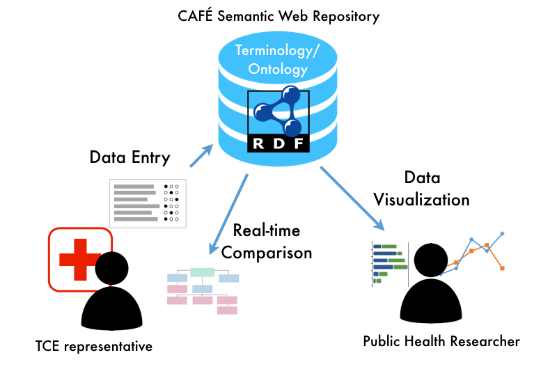

Comparative Assessment Framework for Environments of Trauma Care
The NIH-funded project Comparative Assessment for Environments of Trauma Care (CAFE) (R01GM111324) aims to develop a web service that allows representatives in interested institutions to pre-assess the organizational structure of their trauma center or trauma system and to learn about possible optimizations. Users will answer a number of questions about the leadership and governance structure of their trauma center or trauma system. Based on their answers the service will create a graphical representation of the organizational structure. It will be possible for the users to compare their organizational structure to a typical trauma center or trauma system. This comparison will allow the dissemination of the best organizational structures across trauma centers and trauma systems.
A crucial component of this project is to create a shared terminology of trauma systems and trauma centers. It is developed in close collaboration with the American College of Surgeons Committee of Trauma. The terminology will be embedded in a computer-parsable ontology and it will be freely available from the internet.